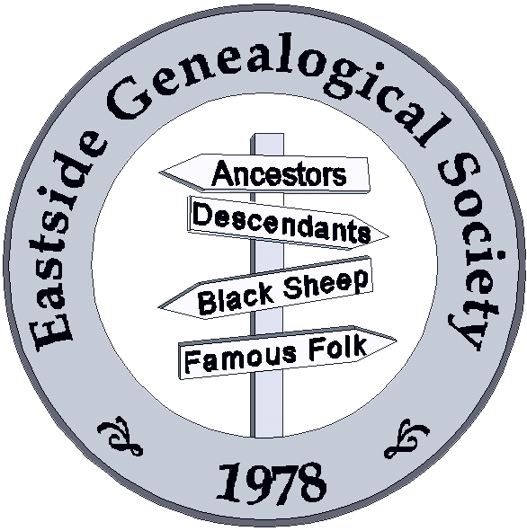

Home
Events
Links
EGS
Contacts
USA Sites
Italian Sites
Software
Reference

Italian Interest Group (IIG)
(Founded March 1990)
Of The Eastside Genealogical Society
SOFTWARE
Copy and paste the URL links to your browers.
Website
Free or $
Link (URL)
Comments
Ancestry's Learning for Italian Research
Free
http://www.ancestry.com/learn/learningcenters/default.aspx?section=Research_EN_IT&o_iid=23560&o_lid=23560
Free Genealogy Software
Free
Many programs but free ones include Legacy Std Edition www.legacyfamilytree.com, RootsMagic Essential www.rootsmagic.com/Try/RootsMagic & some others offer free trials periods.
Go to the top of the page